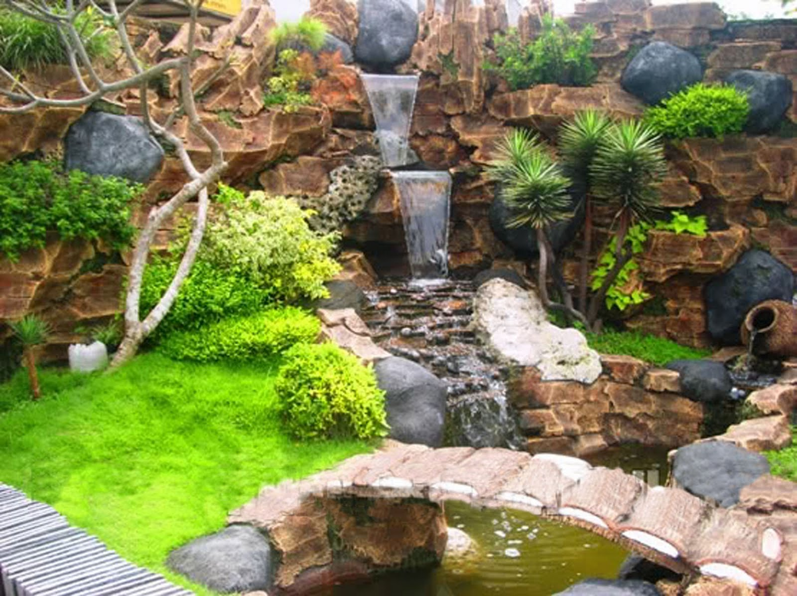
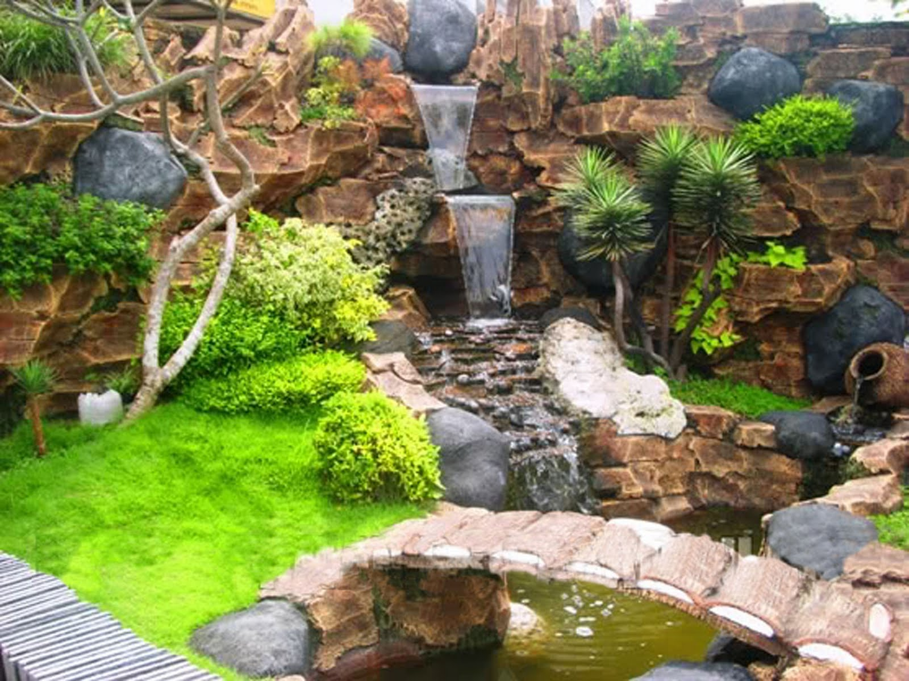

Taman depan sekolahku tampak sederhana. Bentuknya seperti parabola yang disandarkan miring ke pagar depan. Pada posisi tengah dibentuk kolam kecil, arena bermain ikan emas dan gurame, sedangkan di kanan kiri kolam ada batu bulatan yang menyerupai pagupon. Amat unik.
aman ini tidak luas, bahkan bisa dikatakan sangat kecil jika
dibandingkan luas pekarangan sekolah.
Lebih kurang 40m2 terlihat semakin indah dengan aneka ragam
bunga yang menghuninya.
 

Sebelah kiri dan kanan pohon palm, 4 m tingginya. Daunnya cukup lebat berdampingan dengan batu pagupon. Tepat di samping kiri, hampir batas taman terdapat pohon cemara.
Setiap pohon palm dan pohon cemara termasuk batu pagupon tadi, dikelilingi bunga-bunga yang berwarna-warni.